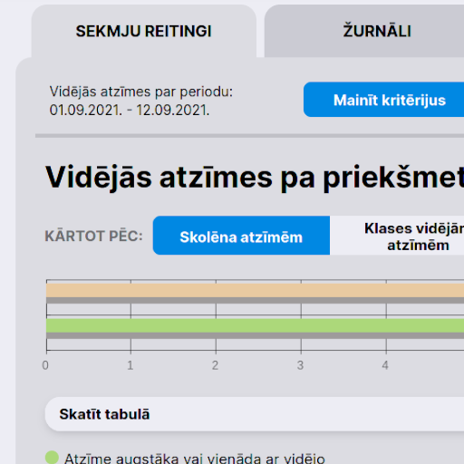
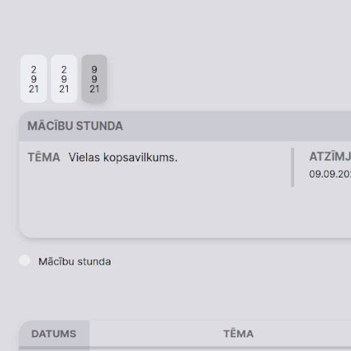
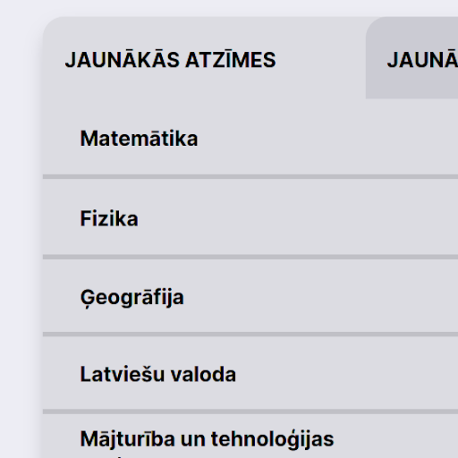

Versija 0.3 ir milzīgs atjauninājums, kas, cerams, padarīs E-klases Palīgu pilnībā funkcionālu gandrīz visiem.
Ģimenes komplekta atbalsts
Ģimenes komplekta funkcijas tagad arī seko E-klases Palīga modernajam dizainam.
Ja Tev nav Ģimenes komplekts, E-klases Palīgs automātiski visas nepieejamās funkcijas paslēpj.



Labāka statistika
Tagad statistikas panelī var uzspiest uz labākās un sliktākās atzīmes, lai atvērtu vairāk informāciju par to.
Statistikas panelis tagad arī ņem vērā atzīmju labojumu jaunāko atzīmi un uztver NV kā 0.
Dizaina uzlabojumi
- Tagad pie saitēm un failiem blakus rādās jauna ikona
- Uzlabots uzstādījumu skata dizains
- Kā jau varat redzēt, šī lapa arī ir saņēmusi jaunu dizainu
- Lodziņš, kas rādās, kamēr sūta vēstuli, tagad seko E-klases Palīga dizainam
- Uzlabots statistikas dizains
- Navigācijas panelis tagad izskatās labāk uz dažiem ekrāna izmēriem
Vairāk animācijas
Tagad E-klases Palīgs pievieno animācijas šajās vietās:
- Atzīmju lodziņam atveroties un aizveroties
- Stundu laiku lodziņam aizveroties
- Apzīmējumu lodziņam atveroties un aizveroties
- Uz telefona, tumšajam fonam kamēr aizveras sānpanelis
Izlabotās kļūdas
Šajā versijā ir izlabotas šīs kļūdas:
- Iepriekšējā versijā netīšām nebija izņemts ad-block
- E-klases pastam dažkārt vēl bija orģinālais ("ne-E-klases Palīga") izkārtojums
- E-klases pastā varēja lejupielādēt failu tikai nospiežot uz tā nosaukuma
- Gaišajā režīmā izvēļņu teksts palika balts, kad uz tā uzvilka kursoru
- Apzīmējumu lodziņā pašiem simboliem tika izmantots nepareizais fonts
Vēlāk E-klases Palīgam būs iebūvēts veids, kā paziņot par kļūdām.
Un tas ir viss! Ceru, ka jums patīk E-klases Palīgs un patiks šis atjauninājums!
© Dāvis Lektauers, 2021